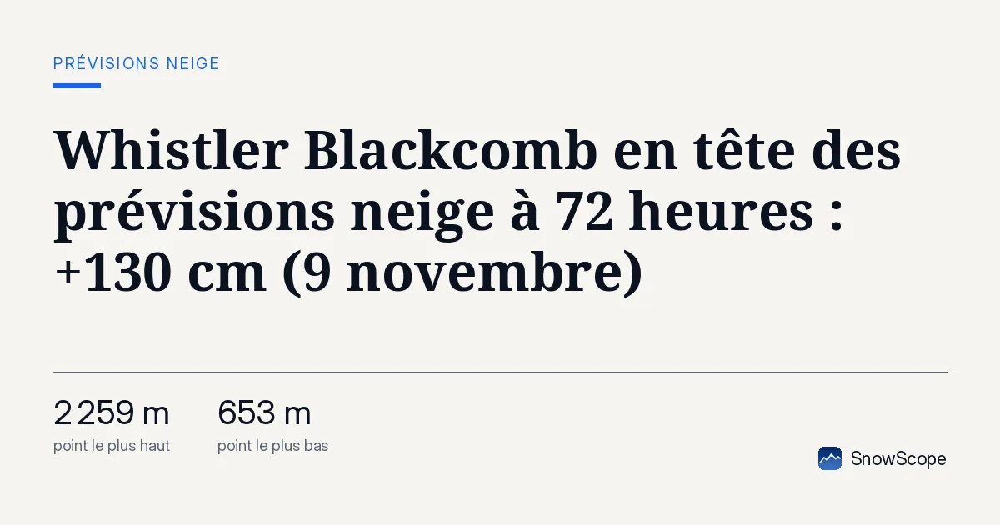
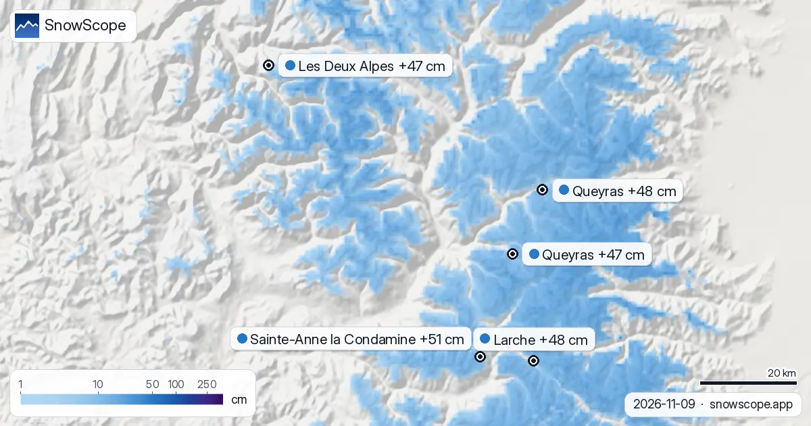
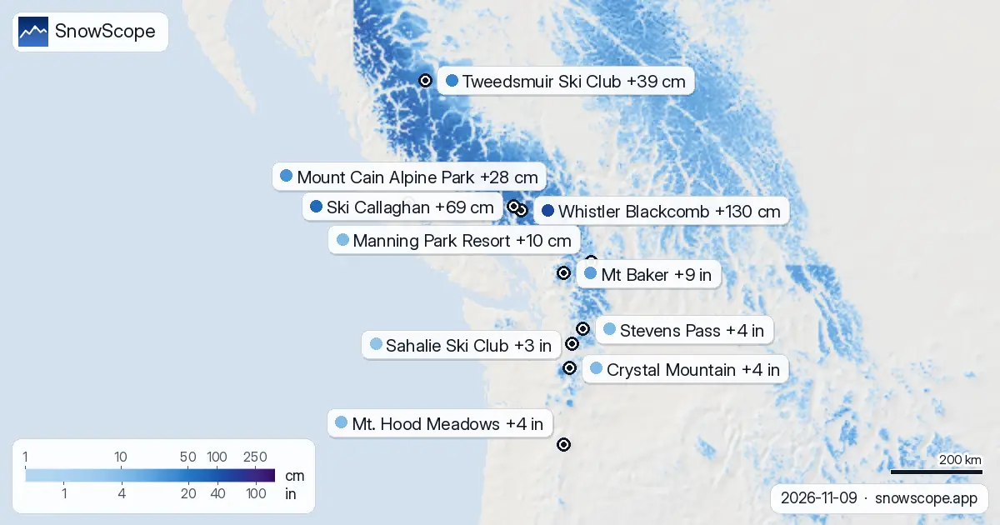

Whistler Blackcomb en tête des prévisions neige à 72 heures : +130 cm (9 novembre)
Whistler Blackcomb recevra le plus de neige dans les 72 heures à venir : 130 cm d'ici le 12 novembre. En Europe et en Amérique du Nord, les plus hauts sommets accumuleront le plus ; plus bas, la pluie s'écoulera rapidement vers les rivières. SnowScope montre où se situe la limite de neige—au-dessus, le poudreuse fraîche reste en place ; au-dessous, l'eau hivernale s'écoule.
Consultez les prévisions neige en temps réel pour Whistler Blackcomb sur l'application SnowScopeHauteurs de neige, alertes poudreuse et carte 3D, gratuitement.
Les Alpes en tête en Europe
Sainte-Anne la Condamine (France) domine les prévisions alpines avec 10 cm dans les 24 prochaines heures et 51 cm d'ici le 12 novembre. La limite de neige se situe près de 2 800 m, donc les pentes supérieures captureront de la neige sèche tandis que les pistes basses risquent de voir de la pluie. Larche (France) suit de près avec 8 cm aujourd'hui et 48 cm sur trois jours ; ici la limite de neige atteint 2 900 m, laissant le terrain inférieur plus humide.
Le Queyras compte deux zones dans les prévisions. Aux Aiguilles, 6 cm tombent en 24 heures et 48 cm en trois jours à une limite de neige de 2 800 m. À Céillac, les crêtes verront 9 cm et 47 cm d'ici lundi, à nouveau près de 2 800 m. Les Deux Alpes et Isola 2000 suivent de près toutes deux avec 47 cm attendus sur la période complète.
| # | Station | Région | +24 h | +72 h | Limite pluie-neige |
|---|---|---|---|---|---|
| 1 | Sainte-Anne la Condamine | Alpes · France | 10 cm | 51 cm | 2 800 m |
| 2 | Larche | Alpes · France | 8 cm | 48 cm | 2 900 m |
| 3 | Queyras | Alpes · France | 6 cm | 48 cm | 2 800 m |
| 4 | Les Deux Alpes | Alpes · France | 9 cm | 47 cm | 2 800 m |
| 5 | Queyras | Alpes · France | 9 cm | 47 cm | 2 800 m |
| 6 | Isola 2000 | Alpes · France | 7 cm | 47 cm | 3 000 m |
| 7 | La Grave | Alpes · France | 8 cm | 45 cm | 2 900 m |
| 8 | Argentera | Alpes · Italie | 7 cm | 45 cm | 3 000 m |
| # | Station | Région | +24 h | +72 h | Limite pluie-neige |
|---|---|---|---|---|---|
| 1 | Mt Baker | Ouest américain · États-Unis | 8 in (20 cm) | 9 in (24 cm) | 9 200 ft (2 800 m) |
| 2 | Crystal Mountain | Ouest américain · États-Unis | 4 in (10 cm) | 4 in (10 cm) | 10 500 ft (3 200 m) |
| 3 | Mt. Hood Meadows | Ouest américain · États-Unis | 4 in (10 cm) | 4 in (10 cm) | 11 200 ft (3 400 m) |
| 4 | Stevens Pass | Ouest américain · États-Unis | 4 in (10 cm) | 4 in (10 cm) | 9 800 ft (3 000 m) |
| 5 | Sahalie Ski Club | Ouest américain · États-Unis | 3 in (8 cm) | 3 in (8 cm) | 9 500 ft (2 900 m) |
| 6 | Hurricane Ridge | Ouest américain · États-Unis | 3 in (7 cm) | 3 in (7 cm) | 10 200 ft (3 100 m) |
| 7 | White Pass | Ouest américain · États-Unis | 2 in (5 cm) | 2 in (5 cm) | 10 800 ft (3 300 m) |
| 8 | Ski Eldorado | Nord-Est américain · Canada | 1 in (2 cm) | 2 in (5 cm) | 2 000 ft (600 m) |
| # | Station | Région | +24 h | +72 h | Limite pluie-neige |
|---|---|---|---|---|---|
| 1 | Whistler Blackcomb | Ouest canadien · Canada | 17 cm | 130 cm | 2 500 m |
| 2 | Ski Callaghan | Ouest canadien · Canada | 19 cm | 69 cm | 2 400 m |
| 3 | Tweedsmuir Ski Club | Ouest canadien · Canada | 4 cm | 39 cm | 2 000 m |
| 4 | Mount Cain Alpine Park | Ouest canadien · Canada | 11 cm | 28 cm | 2 600 m |
| 5 | Manning Park Resort | Ouest canadien · Canada | 6 cm | 10 cm | 2 700 m |
| 6 | Whitewater | Ouest canadien · Canada | 6 cm | 9 cm | 3 300 m |
| 7 | Revelstoke | Ouest canadien · Canada | 5 cm | 7 cm | 2 900 m |
| 8 | Summit Lake Ski & Snowboard Area | Ouest canadien · Canada | 5 cm | 7 cm | 3 100 m |

Le Pacifique Nord-Ouest reçoit les plus fortes chutes isolées
Mt Baker (États-Unis) sera le seul domaine du continent à rivaliser avec les Alpes pour les chutes immédiates. Il devrait recevoir 8 in (20 cm) dans les 24 prochaines heures—plus que toute autre station américaine—et 9 in (24 cm) d'ici le 12 novembre. La limite de neige là-bas se situe à 9 200 ft (2 800 m), donc la majeure partie de la montagne restera sèche et skiable.
Crystal Mountain, Mt. Hood Meadows et Stevens Pass s'attendent tous à 4 in (10 cm) sur les mêmes 24 heures et des totaux similaires d'ici lundi. Les limites de neige montent abruptement à ces domaines—10 500 à 11 200 ft (3 200 à 3 400 m)—ce qui signifie que les zones de base verront probablement de la pluie ou du verglas, et seuls les pics supérieurs conserveront du poudreuse fraîche.

L'Ouest canadien rompt le schéma
Whistler Blackcomb se distingue. Elle accumule 17 cm dans les 24 prochaines heures et atteindra 130 cm d'ici le 12 novembre—près du triple de tout autre domaine dans les prévisions. La limite de neige là-bas reste basse à 2 500 m, gardant toute la montagne sèche et froide. C'est un événement exceptionnel pour début novembre.
Ski Callaghan, le domaine voisin au nord, en bénéficiera aussi avec 19 cm dans les premières 24 heures et 69 cm au total d'ici lundi. La limite de neige près de 2 400 m signifie que le poudreuse recouvrira tout le terrain. Tweedsmuir Ski Club verra moins mais toujours une accumulation substantielle : 4 cm aujourd'hui et 39 cm d'ici la fin de la période à une limite de neige de 2 000 m.

Où se situe la limite entre la neige et la pluie
La limite de neige marque le point où la neige nouvelle cesse et la pluie commence. Elle se situe environ 300 m au-dessous du niveau de gel prévu. Au-dessus, la neige fraîche s'accumule sur la montagne pendant des semaines ou des mois. Au-dessous, les précipitations atteignent le sol sous forme d'eau et alimentent les rivières et réservoirs en quelques jours.
Dans la plupart des domaines alpins, la limite de neige oscille entre 2 800 et 3 000 m—assez haute pour protéger le tiers supérieur de la montagne mais assez basse pour que les pistes d'altitude moyenne deviennent humides d'ici le milieu de la semaine. Mt Baker bénéficie d'une limite de neige basse à 2 800 m ; Crystal Mountain et Mt. Hood Meadows, avec des limites au-dessus de 3 200 m, verront plus des prévisions tomber sous forme de pluie.
À quoi s'attendre lors de votre visite
Les prévisions aussi lointaines sont des guides, pas des certitudes. Les limites de neige peuvent se décaler ; la limite entre la neige sèche et humide peut monter ou descendre de centaines de mètres. Consultez la carte à nouveau la veille de votre départ, et restez attentif aux mises à jour si le schéma météorologique change.
Sur les pentes les plus hautes—au-dessus de la limite de neige—le poudreuse neuf sera vierge et moelleux jusqu'à midi. Partez tôt pour en profiter tant qu'il reste léger. À mesure que la journée se réchauffe, le sommet de la neige nouvelle commencera à se tasser et à se lier à la base en dessous. L'après-midi, même sur les pics, le caractère de la neige aura changé.
Conseils aux skieurs
- À Whistler Blackcomb et Ski Callaghan, la neige prévue est exceptionnelle pour novembre : prévoyez d'être là tôt dans la journée tant qu'elle est encore vierge et moelleuse sur les pentes supérieures.
- À Mt Baker, les 8 in (20 cm) dans les 24 prochaines heures representent les plus fortes chutes de l'Ouest américain ; la limite de neige basse signifie que vous pouvez en profiter partout sur la montagne, pas seulement au-dessus de 11 000 ft (3 350 m).
- Dans les Alpes, restez au-dessus de 2 800 m après que le premier système passe. Les pistes basses deviendront humides à mesure que le réchauffement de midi descend la montagne. L'accès aux plus hauts remontées est votre assurance.
- Avant de skier hors-piste ou de vous aventurer en arrière-pays, lisez le bulletin officiel d'avalanche de votre région. La neige fraîche sur les pentes raides peut glisser.
- Une station ouverte et une station avec de la neige fraîche ne sont pas la même chose. Consultez le site Web de la station pour connaître l'état des remontées, le terrain ouvert et la disponibilité du stationnement et des installations.
À propos de ces chiffres
Les hauteurs de neige des stations sont la neige la plus épaisse sur le haut du domaine à la date indiquée ; ce sont des estimations pour une zone, pas une mesure en un point. Les prévisions peuvent changer. Consultez toujours le bulletin d'avalanche officiel avant le hors-piste.
Bulletins d'avalanche officiels: EAWS (Europe) · avalanche.org (US) · Avalanche Canada
Citer ce bulletin
Pour la recherche, l'enseignement ou la presse : chiffres et graphiques réutilisables librement sous CC BY 4.0 avec cette citation.
SnowScope (2026), Whistler Blackcomb en tête des prévisions neige à 72 heures : +130 cm (9 novembre), https://snowscope.app/blog/fr/2026/11/where-most-snow-falls-next-72-hours-9-november-2026.html, consulté le 2026-11-09
SnowScope (Atlas Labs). (2026, November 9). Whistler Blackcomb en tête des prévisions neige à 72 heures : +130 cm (9 novembre). SnowScope snow reports. https://snowscope.app/blog/fr/2026/11/where-most-snow-falls-next-72-hours-9-november-2026.html
BibTeX
@misc{snowscope2026wheremostsnowfallsnext72,
author = {{SnowScope (Atlas Labs)}},
title = {Whistler Blackcomb en tête des prévisions neige à 72 heures : +130 cm (9 novembre)},
year = {2026},
month = nov,
howpublished = {\url{https://snowscope.app/blog/fr/2026/11/where-most-snow-falls-next-72-hours-9-november-2026.html}},
note = {Published 2026-11-09 11:38 UTC; accessed 2026-11-09}
}· CC BY 4.0 · Méthodes, données et outils →
Whistler Blackcomb : neige et température selon l'altitude, cet hiver vs l'hiver dernier (outils) →
Suivre Whistler Blackcomb
Gratuit : un message quand la neige arrive, et la météo chaque matin.